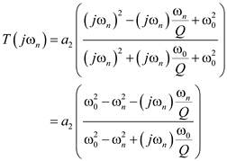

Step 1:
Case 1:
The frequency of the zeros of second order all pass filter is slightly lower than that of the poles.
The transfer function of second order all-pass filter is,
.
The transfer function at is,

At DC, the transfer function is,
 where .
where .
The magnitude of the transfer function at  , for frequency of the zeros lower than that of the poles is,
, for frequency of the zeros lower than that of the poles is,
 where
where  .
.
Step 2:
The sketch of the magnitude, , for frequency of the zeros lower than that of the poles is shown in Figure 1.
, for frequency of the zeros lower than that of the poles is shown in Figure 1.

Step 3:
Case 2:
The frequency of the zeros of second order all pass filter is slightly highly than that of the poles.
At DC, the transfer function is,
where .
The magnitude of the transfer function at  , for frequency of the zeros higher than that of the poles is given by
, for frequency of the zeros higher than that of the poles is given by
 where
where  .
.
The sketch of the magnitude,  , for frequency of the zeros higher than that of the poles is shown in Figure 2.
, for frequency of the zeros higher than that of the poles is shown in Figure 2.